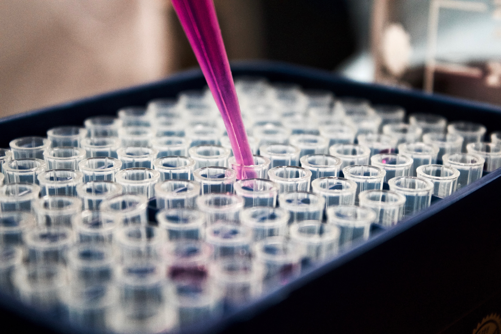

Located within the ithree institute, the UTS Sequencing Facility offers next generation DNA seqeucning using Illumina platform and bioinformatic services. Our aim is to provide affordable support for internal and external researchers, students and industries to generate genomic data.
Bacterial Whole Genome SequencingWe offer a comprehensive DNA to bioproject pipeline. For only 80 AUD, you will get the sequencing data, the assembly of the bacterial genome and the free service for submitting your data onto the NCBI database with 1-year embargo. We do give discount for large scale samples.
|
|
16S Amplicon SequencingServices include:
|
 |
OTHER TYPES OF SEQUENCINGWe also offer other types of sequencing including: Please contact us for more information.
|
Get in touch with the UTS Sequencing Facility to learn more about our services and what we can do for you.
E-mail: ngsfacility@uts.edu.au
Call: (+61) 2 9514 1601